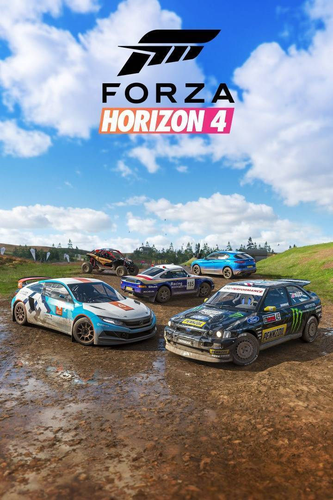

Forza Horizon 4 es un videojuego de carreras ambientado en un mundo abierto entorno basado en una Gran Bretaña ficticia, con regiones que incluyen representaciones condensadas de Edimburgo, las Tierras Altas de Escocia, Lake District , Ambleside y Cotswolds , Bamburgh entre otros. El juego cuenta con un creador de rutas que permite a los jugadores crear carreras utilizando rutas completamente personalizadas.
